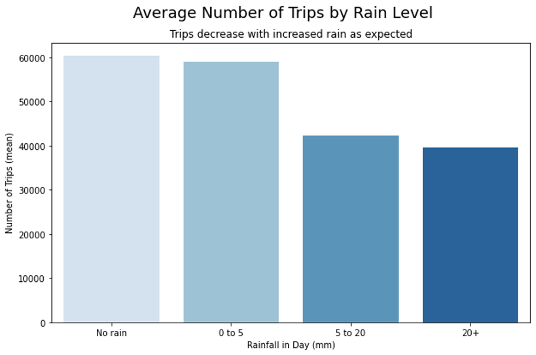

High MAE at high-volume stations might be acceptable
High MAE at low-volume stations might indicate systematic bias
Spatial patterns in errors suggest missing features
Temporal patterns suggest missing time dynamics
Common Error Patterns
Underpredicting peaks: Missing high-demand periods (rush hour)
Weekend vs. weekday differences: Holiday patterns not fully captured
Spatial clustering: Errors concentrated in certain neighborhoods
Waterfront (leisure rides?)
Downtown (tourist activity?)
Transit hubs (commuter substitution?)
Critical question: Are errors related to demographics? (Equity concern!)
Coding Techniques
Binning Data into Time Intervals
Code
# Hourly Binningdat60 <- dat %>%mutate(interval60 =floor_date(ymd_hms(start_time), unit ="hour"))dat15 <- dat %>%mutate(interval15 =floor_date(ymd_hms(start_time), unit ="15 mins"))# Extracting Time Featuresdat60 <- dat %>%mutate(interval60 =floor_date(ymd_hms(start_time), unit ="hour"),week =week(interval60), # Week of year (1-52)dotw =wday(interval60, label=TRUE), # Day of week (Mon, Tue, ...)hour =hour(interval60) # Hour of day (0-23) )
Temporal Lags
Note: lags are calculated within each station; model will learn which lags are most predictive for each station/time combination
Not every station has trips every hour; lag calculations break if rows are missing
use expand.grid() to create all combinations of the supplied vectors – it essentially build a full grid (a Carteisan product) of every possible pairing
Code
# Create every possible station-hour combinationstudy.panel <-expand.grid(interval60 =unique(dat_census$interval60),from_station_id =unique(dat_census$from_station_id))# Join to actual trip countsstudy.panel <- study.panel %>%left_join( dat_census %>%group_by(interval60, from_station_id) %>%summarize(Trip_Count =n()),by =c("interval60", "from_station_id") ) %>%mutate(Trip_Count =replace_na(Trip_Count, 0)) # Fill missing with 0
Code
# Joining Station Attributesstation_data <- dat_census %>%group_by(from_station_id) %>%summarize(from_latitude =first(from_latitude),from_longitude =first(from_longitude),Med_Inc =first(Med_Inc),Percent_White =first(Percent_White),# ... other demographics )# Join to panelstudy.panel <- study.panel %>%left_join(station_data, by ="from_station_id")
Abstract: “As bike-share systems expand in urban areas, the wealth of publicly available data has drawn researchers to address the novel operational challenges” these systems face. One key challenge is to meet user demand for available bikes and docks by rebalancing the system. This chapter reports on a collaborative effort with Citi Bike to develop and implement real data-driven optimization to guide their rebalancing efforts. In particular, we provide new models to guide truck routing for overnight rebalancing and new optimization problems for other non-motorized rebalancing efforts during the day. Finally, we evaluate how our practical methods have impacted rebalancing in New York City.”
Prediction Timescale: “Weekly resolution is far too sparse to capture meaningful relationships. Therefore, we would like to build models that predict at the Hourly timescale if we can, and if not, then use the Daily timescale. At the sub hourly timescale, the data became too unwieldy and noisy for a years worth, let alone for the many years of data Citi Bike has available. However in future extensions of this project we would like to take a second level resolution for one week for one station and predict the ridership at that level.”
Weather Data:

Models Used: “We attempted two models, the first of our models is the traditional SARIMA model, the second was a Long Short-Term Memory Recurrent Neural Network (LSTM-RNN RNN Recurrent Neural Network: This is a type of Artificial Neural Network that can also update all of its weights through time. RNN’s are extremely powerful techniques that can allow for short-term memory to be introduced into the model. ). In this, we further distinguish the models by the time resolution, and whether or not the model was including weather data (i.e. had multidimensional inputs).”
Identifying Rebalance Movements: “The easiest method for a given bike is to compare the starting station for each trip with the ending station of the previous trip. If the bike appears to have teleported from one station to another between trips, it most likely was rebalanced!”
To fix the imbalance, Citi Bike uses various tactics to move bikes to in-demand stations. One involves hiring workers to drive panel trucks around the city, delivering bikes where they’re needed.
Another, created in 2016, is a program called Bike Angels, in which Citi Bike users move bikes in exchange for points that could be cashed in for swag like water bottles and backpacks, membership discounts and gift cards. Lyft pays 20 cents per point. Each ride generates a maximum of 24 points.